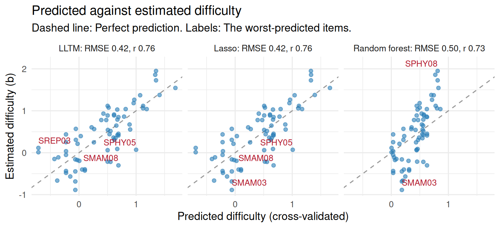

Chapter 14 What item text tells us
Learning goals. After this chapter you can
- explain why predicting item difficulty from text is useful, and what it can and cannot replace;
- describe items by text features with
item_features(), and connect them to the item covariates of the linear logistic test model (LLTM); - predict difficulty with an explanatory model, a lasso and a random forest
using
predict_difficulty(), and compare them by cross-validation; - fit the one-step LLTM to responses in mirt;
- recognize leakage, choose the right unit to hold out, and know the limit set by the error in estimated difficulties.
Key terms: Feature, LLTM, overfitting and cross-validation, embedding, data leakage.
14.1 The ideas
Every new item needs a difficulty before it can be used for scoring, and the usual way to get one is a field test: The item is given to hundreds of test takers and calibrated (Chapter 3). Field testing is slow and expensive, and it exposes items before they count. Item writers also know that some features make items harder: More reading, an extra step, a negation, decimals instead of whole numbers. If difficulty could be predicted from the text, a program could target field-test forms, use smaller field-test samples, steer item writing towards the difficulties the bank lacks, and judge items written by a generator (Chapter 17).
Psychometrics and machine learning both have a way of doing this.
- Explanatory IRT. The linear logistic test model (Fischer 1973) replaces each item’s difficulty with a weighted sum of its features: \[b_i = \eta_0 + \sum_k \eta_k q_{ik},\] where \(q_{ik}\) is the value of feature \(k\) for item \(i\) (the item’s covariates) and \(\eta_k\) is how much the feature adds to difficulty, in logits. The weights are read as evidence about what makes items hard, which is a claim about the construct (De Boeck and Wilson 2004). The model can be fitted to the responses in one step, or in two steps by regressing estimated difficulties on the features.
- Prediction. Machine learning treats difficulty as a label to predict from as many features as are useful: Counts and readability measures, word frequencies, or embeddings of the text from a language model. Models such as the lasso or a random forest are judged by how well they predict items they were not trained on (AlKhuzaey et al. 2024; Benedetto et al. 2023).
The two are less different than they look. The two-step LLTM is a linear regression, and the lasso is the same regression with its weights shrunk. What differs is the goal: Explaining difficulty, or predicting it as accurately as possible. Three cautions apply to both.
- Leakage. A feature computed from the same responses as the difficulty, such as the proportion correct in the field test, predicts difficulty almost perfectly and is useless, because it is not available until the item has been field-tested.
- What is held out. Items written from the same template (an item model) share most of their difficulty. A model that has seen other items from an item’s template predicts it well; a model asked about a new kind of item usually does much worse. Cross-validation must hold out the unit you will predict for.
- The noise floor. Estimated difficulties have standard errors, and features never capture everything that makes an item hard. No model can predict \(b\) more closely than its estimation error, and an LLTM rarely fits as well as giving every item its own difficulty. Real benchmarks show modest gains over simple baselines (Yaneva et al. 2024).
14.2 Example 1: Features and an explanatory model
A science program has 70 multiple-choice items of the form “Which of these is a mammal?”, on seven topics. Half the items are negated (“Which of these is NOT a mammal?”), half start with a context sentence that adds reading but no content, and in some the key happens to be the longest option, a cue that test-wise students use. We simulate the items and the responses of 1,000 students, and calibrate the Rasch model.
# Simulated science classification items, with responses of 1,000 students.
set.seed(1414)
groups <- list( # members, non-members and base difficulty of each topic
mammal = list(yes = c("whale", "bat", "dolphin", "rabbit", "horse", "squirrel"),
no = c("shark", "penguin", "frog", "crocodile", "salmon", "eagle"), b = -0.8),
reptile = list(yes = c("lizard", "turtle", "snake", "crocodile", "gecko", "tortoise"),
no = c("frog", "salamander", "newt", "toad", "eel", "seal"), b = 0.2),
insect = list(yes = c("ant", "beetle", "butterfly", "grasshopper", "bee", "dragonfly"),
no = c("spider", "scorpion", "centipede", "tick", "crab", "snail"), b = 0),
metal = list(yes = c("copper", "iron", "aluminium", "zinc", "silver", "tin"),
no = c("glass", "wood", "plastic", "rubber", "sulfur", "carbon"), b = -0.3),
conductor = list(yes = c("copper wire", "a steel nail", "an aluminium can", "salt water",
"graphite", "a silver spoon"),
no = c("a rubber band", "dry wood", "a glass rod", "a plastic ruler", "air",
"pure water"), b = 0.5),
renewable = list(yes = c("wind", "sunlight", "tides", "geothermal heat", "moving water", "biomass"),
no = c("coal", "oil", "natural gas", "uranium", "peat", "diesel"), b = -0.4),
physical = list(yes = c("ice melting", "sugar dissolving in water", "glass breaking",
"water boiling", "wax melting", "salt crystals forming as water evaporates"),
no = c("wood burning", "iron rusting", "milk souring", "bread baking",
"a match burning", "baking soda fizzing in vinegar"), b = 0.9))
label <- c(mammal = "a mammal", reptile = "a reptile", insect = "an insect", metal = "a metal",
conductor = "a good conductor of electricity", renewable = "a renewable energy source",
physical = "an example of a physical change")
contexts <- c("A class is sorting cards for a science display.",
"Ms Okafor gives her students a quick review question.",
"Students are making a poster for the school science fair.")
rows <- list()
for (g in names(groups)) for (i in 1:10) {
neg <- i > 5
gr <- groups[[g]]
key <- sample(if (neg) gr$no else gr$yes, 1)
opts <- sample(c(key, sample(if (neg) gr$yes else gr$no, 3)))
stem <- sprintf("Which of these is %s%s?", if (neg) "NOT " else "", label[[g]])
if (i %% 2 == 0) stem <- paste(sample(contexts, 1), stem)
rows[[length(rows) + 1]] <- data.frame(
id = sprintf("S%s%02d", toupper(substr(g, 1, 3)), i), topic = g, stem = stem,
A = opts[1], B = opts[2], C = opts[3], D = opts[4], key = LETTERS[match(key, opts)])
}
sci <- do.call(rbind, rows)
f <- item_features(sci)
b_true <- sapply(sci$topic, function(g) groups[[g]]$b) + 0.7 * f$negation +
0.25 * (f$sentences - 1) - 0.3 * f$key_longest + rnorm(nrow(sci), 0, 0.25)
theta <- rnorm(1000)
resp <- sapply(b_true, function(b) rbinom(1000, 1, plogis(theta - b)))
colnames(resp) <- sci$id
rasch <- mirt(as.data.frame(resp), 1, "Rasch", verbose = FALSE)
sci$b <- -coef(rasch, simplify = TRUE)$items[, "d"] # Rasch difficultyitem_features() reads the stem and the options and returns one row of
features per item: Length, sentences, readability (grade), numbers,
negation, the length of the options, whether the key is the longest option,
and each item’s most similar other item.
feats <- item_features(sci)
feats[c(1, 2, 6), c("id", "words", "sentences", "grade", "negation", "key_longest")]
#> # A tibble: 3 × 6
#> id words sentences grade negation key_longest
#> <chr> <int> <int> <dbl> <int> <int>
#> 1 SMAM01 6 1 0.5 0 0
#> 2 SMAM02 15 2 1.5 0 0
#> 3 SMAM06 16 2 4.5 1 1
items <- merge(sci, feats)
round(cor(items[, c("words", "sentences", "grade", "negation", "key_longest")], items$b), 2)
#> [,1]
#> words 0.44
#> sentences 0.24
#> grade 0.33
#> negation 0.58
#> key_longest -0.16Negated items are harder, and so are longer ones; a longest key goes with
easier items. Now predict difficulty from four text features with three
models. predict_difficulty() fits each model five times, each time
predicting the fifth of the items it did not see:
text <- c("sentences", "negation", "option_words", "key_longest")
m1 <- predict_difficulty(items, text)
m1
#> <mv_difficulty> 70 items, 4 features, 5-fold cross-validation (random folds)
#> method RMSE MAE r R2
#> LLTM 0.42 0.35 0.76 0.57
#> Lasso 0.42 0.35 0.76 0.57
#> Random forest 0.50 0.40 0.73 0.41
#> Use tidy() for the coefficients, autoplot() for the predictions.On items they have not seen, the two linear models explain a little under 60% of the variance in difficulty (\(R^2\)), with a typical error (RMSE) of about 0.4 logits. The random forest does worse: With 70 items and effects that simply add up, its flexibility buys nothing. The LLTM’s weights say what the features do:
tidy(m1)[tidy(m1)$method == "lltm", ]
#> # A tibble: 5 × 4
#> method term estimate std_error
#> <chr> <chr> <dbl> <dbl>
#> 1 lltm (Intercept) -0.835 0.171
#> 2 lltm sentences 0.181 0.0968
#> 3 lltm negation 0.670 0.100
#> 4 lltm option_words 0.478 0.0619
#> 5 lltm key_longest -0.292 0.128A negation adds about two thirds of a logit, a context sentence about 0.2,
and a longest key makes an item easier, as item writers would expect.
option_words has a large weight too, which is less plausible as a cause:
Long options belong to the harder topics, such as physical changes. The
features know nothing about topic, so they stand in for it where they can.
Adding the topic as a feature brings the error down to about 0.29 logits
(Exercise 1), close to the 0.25 of item-specific variation built into the
simulation, and the weight of option_words shrinks to almost nothing.
14.3 Example 2: The one-step LLTM in mirt
The two-step LLTM treats the estimated difficulties as known. The one-step
LLTM fits the features to the responses directly: Each item’s difficulty is
constrained to the weighted sum of its features. In mirt, the features are
passed as itemdesign and the model for them as item.formula. Here each
topic gets its own intercept:
design <- data.frame(topic = factor(sci$topic), feats[, c("sentences", "negation", "key_longest")])
lltm <- mirt(as.data.frame(resp), 1, "Rasch", itemdesign = design,
item.formula = ~ 0 + topic + sentences + negation + key_longest, verbose = FALSE)
v <- mod2values(lltm)
eta <- v[v$item == sci$id[1] & v$name %in% c("sentences", "negation", "key_longest"),
c("name", "value")]
eta$difficulty <- -eta$value # mirt models easiness; reverse the sign for difficulty
eta
#> name value difficulty
#> 8 sentences -0.21 0.21
#> 9 negation -0.62 0.62
#> 10 key_longest 0.32 -0.32A context sentence adds about 0.2 logits, a negation about 0.6, and a longest key makes an item about 0.3 logits easier: Close to the two-step weights and to the values used to simulate the data. The classic test of an LLTM compares it with the Rasch model, which gives every item its own difficulty:
anova(lltm, rasch)
#> AIC SABIC HQ BIC logLik X2 df p
#> lltm 81315 81334 81336 81369 -40647
#> rasch 80664 80787 80797 81013 -40261 770.603 60 0Ten parameters cannot replace 70 free difficulties, and the likelihood ratio test says so loudly; with 1,000 test takers it nearly always does. The LLTM is still useful: It shows which features matter and by how much. Explanatory IRT models that add a random item effect, so that each item may differ from its features’ prediction, combine the two views (De Boeck and Wilson 2004). They are generalized linear mixed models, and the eirm package (Bulut et al. 2021) fits them with lme4 from data in long format, one row per person and item. The model below keeps the LLTM’s features and adds a random effect for items, whose variance is the difficulty the features leave unexplained (eirm reports easiness, so the signs are reversed again):
# install.packages("eirm")
library(eirm)
long <- data.frame(person = rep(seq_len(nrow(resp)), ncol(resp)),
item = rep(colnames(resp), each = nrow(resp)),
resp = as.vector(resp))
long <- merge(long, data.frame(item = sci$id, design))
m_eirm <- eirm("resp ~ -1 + topic + sentences + negation + key_longest + (1|person) + (1|item)",
data = long)
print(m_eirm, difficulty = TRUE) # fixed effects as difficulties
lme4::VarCorr(m_eirm$model) # person and residual item varianceThe same framework adds person covariates, such as language status, and their interactions with item features, which is DIF explained by features rather than item by item.
14.4 Example 3: New items or new kinds of items?
So far each fold held out random items, so every topic was in training. A
new item on a known topic is one question; a topic the model has never seen
is another. Hold out whole topics with group:
m3 <- predict_difficulty(items, c("topic", "sentences", "negation", "key_longest"),
group = "topic", methods = "lltm")
m3$accuracy
#> # A tibble: 1 × 5
#> method rmse mae r r2
#> <chr> <dbl> <dbl> <dbl> <dbl>
#> 1 lltm 0.592 0.473 0.445 0.153With its topic held out, an item is predicted as if it belonged to an average topic, and the error doubles to about 0.6 logits; \(R^2\) falls to about 0.15. The features still capture negation, the context sentence and the longest key, but the topic, the largest part of an item’s difficulty, cannot be read off the text. This is the usual finding: Text features place items within a family much better than they predict how hard a new kind of item will be. That is why automatic item generation calibrates item models rather than single items. Figure 14.1 shows the predictions of Example 1, with random folds.

Figure 14.1: Cross-validated predicted against estimated difficulty for the three models of Example 1. Points on the dashed line are predicted exactly; labels mark the worst-predicted items.
14.5 Your turn
- Add
topicto the features of Example 1, with random folds. How much does the error drop, and how do the LLTM weights ofnegation,key_longestandoption_wordschange? - A colleague adds
p_pilot, the proportion correct in this year’s field test, to the features. Compute it fromresp, add it toitems, and runpredict_difficulty(). What does the output warn you about, and why is the model useless for new items? - Without
topic, the two-step LLTM withsentences,negationandkey_longestgiveskey_longesta weight near zero. Why? Look attable(items$key_longest, items$topic). - Look at the
similarityandnearestcolumns offeats. Which items are most alike, and are any of them near-duplicates?
Solutions
# 1. topic as a feature
m_topic <- predict_difficulty(items, c("topic", text))
m_topic$accuracy
#> # A tibble: 3 × 5
#> method rmse mae r r2
#> <chr> <dbl> <dbl> <dbl> <dbl>
#> 1 lltm 0.291 0.240 0.893 0.796
#> 2 lasso 0.288 0.235 0.895 0.800
#> 3 forest 0.410 0.343 0.842 0.593
w <- tidy(m_topic)
w[w$method == "lltm" & !grepl("topic", w$term), ]
#> # A tibble: 5 × 4
#> method term estimate std_error
#> <chr> <chr> <dbl> <dbl>
#> 1 lltm (Intercept) -0.135 0.179
#> 2 lltm sentences 0.214 0.0664
#> 3 lltm negation 0.633 0.0689
#> 4 lltm option_words 0.120 0.142
#> 5 lltm key_longest -0.337 0.0996
# 2. a leaky feature
items$p_pilot <- colMeans(resp)[items$id]
predict_difficulty(items, c(text, "p_pilot"), methods = "lltm")
#> <mv_difficulty> 70 items, 5 features, 5-fold cross-validation (random folds)
#> method RMSE MAE r R2
#> LLTM 0.05 0.03 1 0.99
#> Check: `p_pilot` alone has a rank correlation of -1.00 with b. Is it known before field testing, or computed from the same responses?
#> Use tidy() for the coefficients, autoplot() for the predictions.
# 3. key_longest without topic
tidy(predict_difficulty(items, c("sentences", "negation", "key_longest"), methods = "lltm"))
#> # A tibble: 4 × 4
#> method term estimate std_error
#> <chr> <chr> <dbl> <dbl>
#> 1 lltm (Intercept) -0.173 0.204
#> 2 lltm sentences 0.172 0.133
#> 3 lltm negation 0.704 0.137
#> 4 lltm key_longest -0.0329 0.170
table(items$key_longest, items$topic)
#>
#> conductor insect mammal metal physical renewable reptile
#> 0 10 9 9 9 5 8 6
#> 1 0 1 1 1 5 2 4
# 4. the most similar items
head(feats[order(-feats$similarity), c("id", "nearest", "similarity")])
#> # A tibble: 6 × 3
#> id nearest similarity
#> <chr> <chr> <dbl>
#> 1 SCON06 SCON10 0.759
#> 2 SCON10 SCON06 0.759
#> 3 SREN07 SREN09 0.733
#> 4 SREN09 SREN07 0.733
#> 5 SMET06 SMET10 0.727
#> 6 SMET10 SMET06 0.727- The RMSE drops from about 0.42 to 0.29 and \(R^2\) rises to about 0.8 for
the linear models; the forest stays behind (about 0.41).
negation(about 0.63) andkey_longest(about -0.34) are close to the simulated 0.7 and -0.3, whileoption_wordsfalls from about 0.5 to 0.1 with a large standard error: It was standing in for the topic. - The model predicts almost perfectly, and the printout flags
p_pilot: Its rank correlation with \(b\) is -1. The proportion correct and the Rasch difficulty are computed from the same responses, so the feature is the label in disguise. A new item has no field-test data, so the model cannot be used for it. - Five of the 16 items with a longest key are on physical changes, the hardest topic, whose options are long. Without the topic in the model, the easiness that a longest key brings is cancelled by the difficulty of the topic it comes with. An LLTM weight is only as good as the features left out of the model, as in any regression.
- The most alike pairs (similarity about 0.75) are items on the same topic with the same stem and context sentence and one or two shared options. They are different items written from one template. A similarity close to 1, with the same options, would mark a near-duplicate that should not appear on the same form.
In the lab
Lab 8, run_lab("item-text"), uses item_features() and
predict_difficulty() on 192 numeracy items, finds what the data hide, and
asks how far predicted difficulties can replace a field test. The AI
Hub collects the
other AI tools in mirtverse.
Further reading
Fischer (1973) introduced the LLTM, and De Boeck and Wilson (2004) place it in the family of explanatory item response models. AlKhuzaey et al. (2024) and Benedetto et al. (2023) review difficulty prediction from text, from the education and the computer science sides. Yaneva et al. (2024) report a shared task on real licensing-exam items, a useful reality check. Bulut, Gorgun and Yildirim-Erbasli (2021) show how to fit explanatory extensions of dichotomous and polytomous Rasch models in R with eirm.